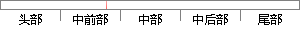

最后是进入异常处理程序的代码编写。
片段位置图

相似结果
相似片段：本文分析知名壳的反调试后整理出来的函数代码,可以...化异常处理进行了详细的介绍,这些是编写加壳程序所需...3)进入Rin90 Sell还有一个有趣的应用是进入血go,...
| 标题 | 《基于IAT加密的加壳程序研究》 |
| 对比库 | 中国学位论文全文数据库 |
| 作者 | 秦杰 |
| 机构 | 电子科技大学 |
| 分类 | 计算机系统结构 |
| 年份 | 2009 |
| 相似率 | 85.71% （严重抄袭） |
※ 片段修改建议 ※
近似词参考：- 处理：处置 处置惩罚
- 最后：末了
- 异常：非常 异样
- 程序：法式 步伐
系统自动生成语句： 末了是进入非常处置法式的代码编写。
注：本片段修改建议为系统自动生成，仅供参考。